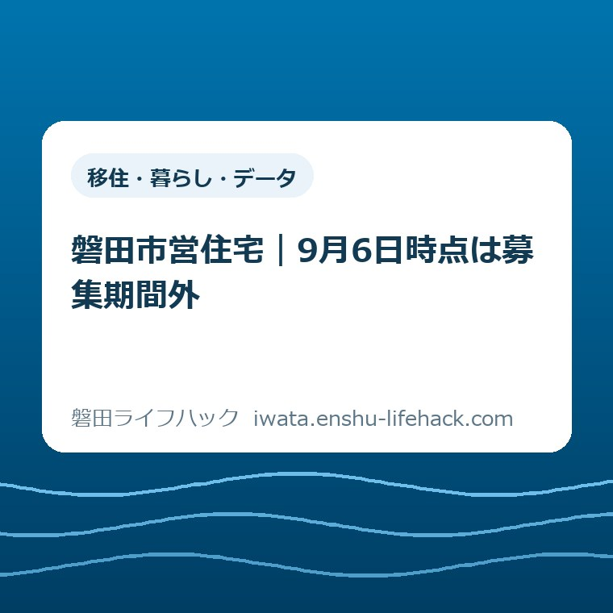

移住・暮らし・データ
磐田市営住宅｜9月6日時点は募集期間外

この記事の要点
Q. 磐田市営住宅は9月なら、もう申し込めますか？
A. 2026年9月6日時点、磐田市営住宅の定期募集は期間外です。定期募集は5月・9月・1月の「広報いわた」に掲載されますが、9月中いつでも申し込める意味ではありません。ただし福田地区のはまぼう団地は通年で随時受付です。空き戸数、申込資格、次回の日程は磐田市公式ページと建築住宅課で必ず確認してください。
導入——9月6日は「待つ」だけの日ではない
磐田市営住宅の9月募集を待ち、住居費を抑えられる住まいを探している方へ向けて書きます。2026年9月6日時点、市公式の募集ページは定期募集の期間外と表示しています。
条件や空き状況は世帯と住宅ごとに変わります。この記事だけで入居できるとは判断せず、最後は磐田市公式ページと建築住宅課で確認してください。
まず認めたいのは、住まいを探す側がすでに払っている手間です。家賃を比べ、通勤や通院の距離を測り、家族の所得と必要書類をそろえる。その途中で「期間外」と分かれば、気持ちも段取りも止まります。
定期募集が閉じていても、2026年9月6日にできることはあります。はまぼう団地の随時受付を見るか、次回告知に備えて資格の六項目を確認するかを分けます。
結論から言えば、「9月募集」と「9月中いつでも申込可」は別です。月の名前だけで窓口へ向かわず、いま開いている入口を公式表示で見分けます。

まず、2026年9月6日の公式表示を確認する
磐田市の「市営住宅入居者の募集」は、2026年9月6日時点で「ただいま定期募集期間外」と表示しています。ページ更新日は2026年6月9日です。
同ページによると、定期募集は年3回です。5月、9月、1月の「広報いわた」に募集内容が掲載されます。
ここで分かるのは掲載月までです。2026年9月の申込開始日、締切日、募集住宅は、9月6日時点のページには示されていません。
したがって、9月号へ載る予定があることを、9月1日から30日まで受け付ける意味にはできません。正確な日程は次の告知で確かめる必要があります。
市営住宅は、公営住宅法に基づいて市が整備・管理する賃貸住宅です。住宅に困っている低額所得者へ、低い家賃で貸す目的があります。
家賃は一律ではありません。入居者の収入、住宅の規模などに応じて決まると、市の募集ページは説明しています。
募集期間、空き戸数、世帯の条件がそろって初めて申込へ進めます。「家賃が安い住宅」という一点だけでは、部屋を選べません。
この記事の事実は2026年9月6日に確認しました。画面の表示は変わり得るため、閲覧日を必ず見直してください。
「9月募集」は、9月中の常時受付ではない
磐田市営住宅の定期募集は、募集対象の住宅と受付期間が示されてから申込む仕組みです。2026年9月6日時点は、その受付期間に入っていません。
これは小さな言葉の違いに見えます。しかし、平日に仕事を休んで市役所へ行く家庭には、見過ごせない違いです。
2026年9月6日は日曜日です。建築住宅課の窓口は土曜・日曜・祝日が受付外なので、定期募集の申込書を持って西庁舎へ向かう日ではありません。
正確な次回日程がまだ表示されていない以上、私は開始日を推測して書きません。9月の広報掲載と、市公式ページの更新を待って確認します。
確認先を一つにしたい方は、磐田市営住宅の条件と申込みを確認するページを保存してください。市公式の募集案内へ進む入口もまとめています。
住まいを急いで確保する必要がある場合は、定期募集だけを待たない判断も要ります。住まいに困ったときの相談先から、状況に合う窓口を確認できます。
例外は、福田地区のはまぼう団地
磐田市営住宅の定期募集が期間外でも、福田地区のはまぼう団地は年間を通じて随時受付です。ここが今回の意外な事実です。
はまぼう団地の所在地は、磐田市福田中島3396番地4です。募集ページには3LDKと2DKの住戸が掲載されています。
2026年9月6日時点の掲載家賃は、3LDKが月額1万9800円から4万2000円です。2DKは月額1万6900円から3万3200円です。
この金額は入居者の収入などで変わります。「一番低い額で必ず借りられる」と受け取らず、自分の世帯で算定される額を確認してください。
募集戸数は固定の数字で掲載されていません。市のページは問い合わせるよう案内しているため、通年受付でも空室が常にあるとは限りません。
市の募集案内は、はまぼう団地の電子申込をいつでも利用できるとしています。2026年9月6日の日曜日でも、電子の入口はあります。
窓口で申込む場合は、市役所西庁舎2階の建築住宅課住宅管理グループです。受付は平日の8時30分から17時15分で、電話は0538-37-4851です。
通年受付とは、資格審査なしで入居できる意味ではありません。空き、世帯条件、所得、書類の確認は残ります。
家賃の前に、六つの申込資格を見る
磐田市営住宅の申込資格は、家賃だけを比べるより先に確認します。申込日現在で条件を満たしていることが基準です。
第一は、磐田市内に住所または勤務場所があることです。これから移る予定だけで足りるかは、自己判断せず担当へ聞きます。
第二は、同居する人に関する条件です。家族構成や単身申込の扱いは個別条件に関わるため、募集案内で自分の世帯を照らします。
第三は、現に住宅に困っていることです。いまの住まいの事情を、申込時に説明できるよう整理します。
第四は、所得月額が基準以下であることです。募集案内では一般世帯15万8000円以下、裁量世帯21万4000円以下としています。
所得月額は、給与の手取り月額をそのまま書く数字ではありません。市の方法で算出されるため、源泉徴収票などを手元に置いて確認します。
第五は、市税の滞納がないことです。納付状況に不明点があれば、申込前に確認しておく方が段取りは早くなります。
第六は、申込者と同居する人が暴力団員でないことです。これらを申込日現在ですべて満たす必要があります。
車いす対応住戸には追加条件があります。歩行が困難な方の身体障害者手帳や要介護度など、対象の確認が必要です。
一世帯で複数住宅へ二重申込すると失格になる案内もあります。家族が別々に動く場合は、申込先を一つにそろえます。
月額家賃だけで、暮らしの負担は決まらない
市営住宅を家計で見るときは、月額家賃と生活全体の固定費を分けます。駐車場使用料、共益費、自治会費などが必要になる場合があります。
入居時には家賃3か月分の敷金が案内されています。毎月の額だけでなく、入居までに用意する現金も見ます。
2024年度から連帯保証人は不要と募集案内にあります。一方、安否確認などに使う緊急連絡先は必要です。
犬や猫などのペットは飼育できません。住み始めてから困らないよう、家族の条件として先に置きます。
福田中島の団地が家賃条件に合っても、通勤、通院、買い物、子どもの送迎距離は別に残ります。磐田市の南北27.1キロと五地区の距離を整理した記事で、生活動線を測れます。
磐田市の人口は2026年7月末で16万3224人、7万2421世帯です。人口と世帯数を家一軒の問題へ置き換えた記事も、住まいを人数だけで決めない材料になります。
市営住宅へ入れるかと、その団地で無理なく暮らせるかは別の問いです。家賃、初期費用、移動時間を一枚に並べて判断します。
入居が決まった後には住所の届出も必要です。転入・転居に伴う住所変更の確認ページを見て、住まい探しと手続きを分けておきます。

評価——良い点は、閉じた入口と開いた入口を分けたこと
磐田市の募集ページの良い点は、定期募集が期間外だと最初に明示していることです。古い募集表を探し続ける時間を減らせます。
良い点の二つ目は、定期募集が5月・9月・1月の年3回だと示していることです。家族の書類準備を始める月が見えます。
良い点の三つ目は、はまぼう団地を通年受付として別に掲げたことです。定期募集が閉じている日に、全選択肢が閉じたと誤解せずに済みます。
良い点の四つ目は、電子申込と窓口の二つを用意していることです。平日に市役所へ行きにくい人にも申込の入口があります。
家賃、所在地、間取り、主な資格、電話番号が同じページにある点も役立ちます。最初の確認を一画面から始められます。
評価——注文したい点は、次に見る日を置くこと
その上で、磐田市の募集ページへ注文したい点があります。期間外の表示の隣に、次回告知の予定日か、確認し直す目安を一行で置いてほしいです。
9月掲載とだけ分かっても、9月6日に見た人は次にいつ開けばよいか迷います。広報の号名や公開予定日があれば、不要な電話と窓口訪問を減らせます。
家賃の表示にも注意が要ります。2025年2月19日更新の施設ガイドと、2026年6月9日更新の募集ページでは上限額の見え方が異なります。
私は新しい募集ページの部屋別金額を優先しました。それでも個別家賃は収入で変わるため、最終額は市へ確認する線を外せません。
申込資格も、一問ずつ確認できる簡単な一覧があると助かります。制度の文章を家族の事情へ置き換える作業を、申込者だけへ背負わせない形を望みます。
対案・結論——今日は入口を一つ決める
磐田市営住宅を2026年9月6日に探す方が決めるのは、入居の結論ではありません。どの入口を次に使うかです。
はまぼう団地の場所と間取りが生活に合うなら、通年受付の空き状況と資格を確認します。条件が合わないなら、定期募集の次回告知を待つ準備へ切り替えます。
募集期間外の日に、いきなり申込書を集めさせるのは順番が逆です。制度は入口を間違えると、知っている人だけが先へ進む。それが一番よくないと私は考えます。
今日できる一歩は、市公式の募集ページを家族のスマートフォンへ一つ保存することです。保存名に「9月6日時点は期間外」と日付も入れます。
はまぼう団地を検討する方は、建築住宅課へ聞く項目を三つ書きます。空き戸数、自分の世帯の申込資格、家賃以外の月額負担です。
住まいを急ぐ事情がある方は、次の定期募集だけに絞らないでください。公的な相談先と民間賃貸を分けて確認し、今夜の住まいまで困る場合はその緊急性を窓口へ伝えます。
2026年9月6日に確認する順番
磐田市営住宅を探す順番は、現在表示、入口、資格、空き、総負担、申込方法の六段階です。
- 市公式の募集ページで、定期募集が期間内か期間外かを確認する。
- はまぼう団地の通年受付か、次回定期募集を待つかを分ける。
- 市内住所・勤務、住宅困窮、所得、市税、同居者などの資格を照合する。
- 希望する団地と間取りの空き戸数を建築住宅課へ確認する。
- 家賃、敷金、駐車場、共益費、自治会費、移動費を一枚に書く。
- 電子申込か平日の窓口かを決め、同じ世帯で二重申込をしない。
申込後は仮審査があり、応募状況によって抽選になる場合があります。現地確認、書類提出、本審査、決定、敷金などを経て入居へ進みます。
電子申込を送った時点で入居決定ではありません。申込後の連絡を受けられる電話番号と、緊急連絡先を家族で共有します。
提出した書類は返却されない案内です。手元に残したい書類は、提出前に写しや画像を保管します。
一度に全部を終える必要はありません。2026年9月6日は現在表示と入口を決め、平日に資格と空きを確認すれば、待つ時間を準備へ変えられます。
大石の視点——家賃より先に、募集日を見る
大石浩之（磐田市／不動産業）として、ここからは公表情報ではなく私の意見を書きます。このテーマに使える個別の体験ストックはありません。
そのため、窓口で誰かに言われた話や、市営住宅を案内した実話は作りません。不動産の段取りを組む者としての判断に限ります。
私の言い切りは、家賃表より先に募集日を見る、です。申込めない部屋の金額を比べ続けても、今日の住まいは前へ進みません。
一方で、私にも迷いがあります。通年受付のはまぼう団地を強く案内すると、福田地区での生活動線が合わない家庭まで急がせるおそれがあります。
だから、通年という一語を「今すぐ申し込む理由」にはしません。空きがあり、資格を満たし、福田中島からの暮らしが合う場合の入口として扱います。
住居費を下げたい気持ちは切実です。その気持ちに、制度の説明をもう一つ積むだけでは足りません。
募集日、資格、空き、総負担、移動の順に分ければ、今日は一つ進めます。決められない日は、次に確認する日を決めるだけでも段取りです。
よくある質問
磐田市営住宅の9月募集、はまぼう団地、申込資格について、2026年9月6日時点の答えを整理します。
磐田市営住宅の9月の定期募集は、いつ申し込めますか。
磐田市は定期募集を5月・9月・1月の「広報いわた」に掲載すると案内しています。ただし、2026年9月6日時点は募集期間外で、公式ページには次回の開始日・締切日の記載がありません。9月中いつでも申し込めるとは考えず、募集ページと建築住宅課で日程を確認してください。
はまぼう団地は2026年9月6日の日曜日でも申し込めますか。
はまぼう団地は年間を通じた随時受付で、市の募集案内は電子申込をいつでも利用できるとしています。窓口は土曜・日曜・祝日を除く8時30分から17時15分です。空き戸数は固定表示されていないため、申込資格と空き状況を市へ確認してください。
収入が低ければ磐田市営住宅へ入居できますか。
収入だけでは決まりません。市内の住所または勤務場所、住宅に困っていること、所得月額の基準、市税の滞納がないこと、同居者など複数の条件があります。条件は世帯ごとに変わるため、申込日現在の状況を建築住宅課と市公式の募集案内で確認してください。
まとめ——期間外でも、次の一歩は決められる
2026年9月6日時点、磐田市営住宅の定期募集は期間外です。9月の広報掲載は、9月中の常時受付を意味しません。
福田地区のはまぼう団地は通年で随時受付です。ただし、空き戸数、申込資格、個別家賃、生活動線を確認してから選びます。
制度や募集状況は個別条件と確認日で変わります。最後は磐田市公式ページと建築住宅課で最新情報を確認してください。
- 2026年9月6日は定期募集の期間外。次回の開始日と締切日は公式告知を待つ。
- はまぼう団地は通年受付だが、空室が常にあるとは限らない。
- 家賃だけでなく、資格、敷金、共益費、移動時間を一緒に確認する。
- 今日の一歩は、公式ページを保存し、使う入口を一つ決めること。
参考にした公式情報
- 市営住宅入居者の募集／磐田市（2026年9月6日確認・ページ更新日2026年6月9日）
- 市営住宅入居の募集案内／磐田市（2026年9月6日確認）
- 施設ガイド はまぼう団地／磐田市（2026年9月6日確認・ページ更新日2025年2月19日）

最終確認日：2026-09-06 ／ 本記事は公表情報と執筆者の見解を分けて記載しています。制度・数値・公開状況は変更される場合があるため、最新情報は磐田市公式ページでご確認ください。